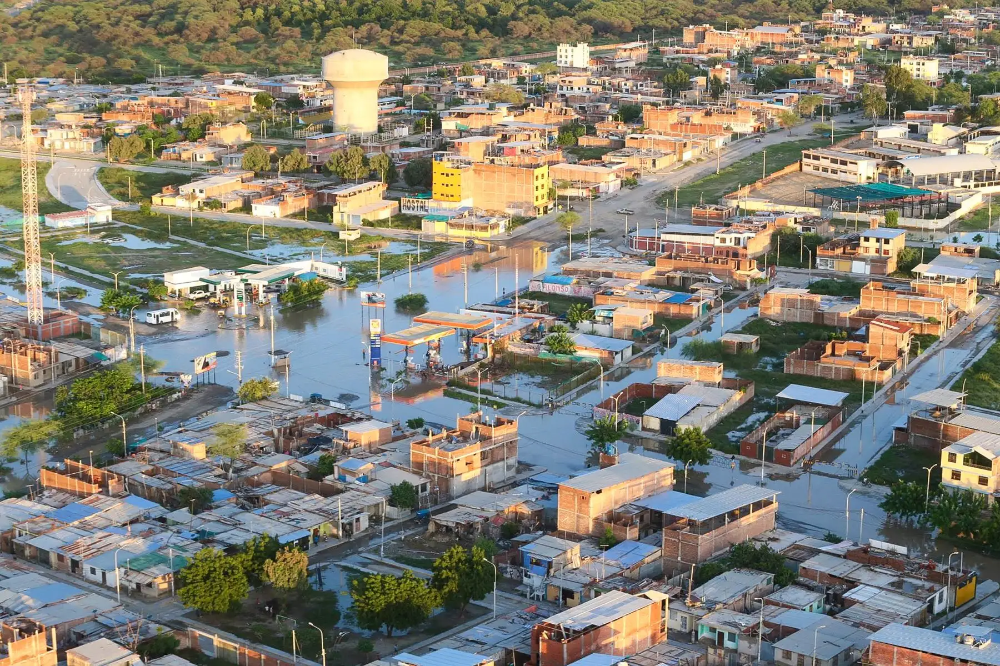
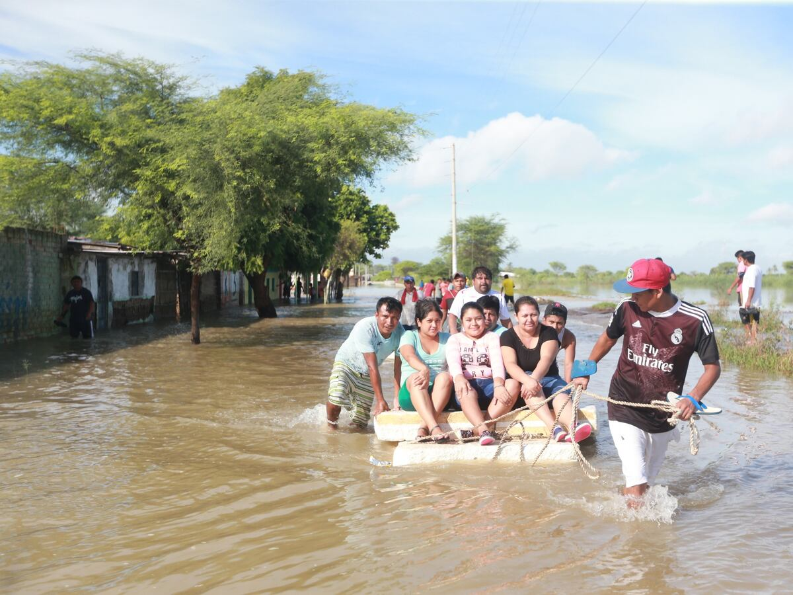

🌊 ¿Qué es?
El Niño es un fenómeno océano-atmosférico asociado a un calentamiento anómalo del Pacífico que puede modificar las condiciones meteorológicas. En la costa norte peruana puede favorecer lluvias intensas.
INDECI: explicación del fenómeno ↗Consulta riesgos, recomendaciones, información agrícola y evidencia científica en un solo lugar.
🚨 Ver alertas 📚 Ver investigaciones● CLIMA ACTUAL · consultando...


El Niño es un fenómeno océano-atmosférico asociado a un calentamiento anómalo del Pacífico que puede modificar las condiciones meteorológicas. En la costa norte peruana puede favorecer lluvias intensas.
INDECI: explicación del fenómeno ↗Documentos oficiales y estudios de riesgo muestran que la provincia presenta exposición a inundaciones, desbordes, activación de quebradas y afectación de infraestructura y agricultura.
CENEPRED/SIGRID ↗En febrero de 2026, INDECI reportó lluvias intensas con daños en viviendas, infraestructura de riego y producción agrícola en Salitral; también reportó inundaciones en Chulucanas.
Reporte INDECI Salitral ↗Contexto: el mango es un cultivo importante de Piura y una investigación científica trabajó con mango criollo de Chulucanas.
Vigilar: drenaje, humedad del suelo, hojas, frutos y cambios sanitarios después de lluvias.
Riesgo climático: eventos extremos pueden modificar las condiciones de producción.
Leer investigación en SciELO ↗Evidencia: una tesis estudió producción, precipitación, temperatura máxima e ICEN en Piura durante 2015–2023.
Hallazgo: la lluvia puede favorecer la producción hasta cierto nivel, pero el exceso puede generar efectos negativos.
Vigilar: acumulación de agua, drenaje, suelo, hojas y frutos.
Ver tesis en ALICIA ↗Vigilar: exceso de agua, canales, drenes y accesos a parcelas.
Antes: limpiar y revisar infraestructura de manejo de agua.
Después: registrar daños y observar el estado del cultivo cuando sea seguro.
Consultar MIDAGRI ↗Vigilar: humedad, erosión, drenaje y cambios visibles en las plantas.
Prevención: mantener canales y zonas de evacuación de agua funcionales.
Importante: las medidas específicas dependen de la variedad y etapa del cultivo.
Información agraria ↗Consulta avisos, revisa canales y drenes, identifica zonas bajas y prepara registros de tus parcelas.
No ingreses a cauces o quebradas activas y sigue las indicaciones de las autoridades.
Cuando sea seguro, registra afectaciones, revisa cultivos e infraestructura y comunica emergencias.
Guarda evidencias y compara los impactos con los avisos para mejorar la preparación de próximas campañas.
Scientia Agropecuaria · 2021. Estudia la producción de limón y mango usando firmas espectrales e imágenes Sentinel-2. Incluye mango criollo de Chulucanas y analiza la relación con factores climáticos extremos.
Artículo completo ↗UPAO · 2024. Analiza 2015–2023 y relaciona producción de limón con precipitación, temperatura máxima e ICEN. El exceso de precipitación puede afectar negativamente la producción.
Ficha ALICIA/CONCYTEC ↗Kawsaypacha · 2024. Analiza la gestión del riesgo frente a El Niño y señala la presencia de puntos críticos y exposición a inundaciones en la región, incluyendo Morropón.
Leer en SciELO ↗CENEPRED/SIGRID. Reúne evaluaciones de riesgo por inundación pluvial para centros poblados de Morropón y La Matanza, considerando el contexto del Niño Costero.
Consultar biblioteca SIGRID ↗Brindar información clara, accesible y organizada sobre los riesgos climáticos que pueden afectar a la agricultura de Morropón, especialmente frente a lluvias intensas y eventos asociados al Fenómeno del Niño Costero.
Utilizar una plataforma digital que reúna alertas, información de cultivos, recomendaciones preventivas y fuentes científicas y oficiales para facilitar el acceso a información útil.
La prevención y el acceso oportuno a información pueden ayudar a comprender mejor los riesgos y fortalecer la preparación de las familias y productores de nuestra provincia.
Integrante del equipo
Integrante del equipo
Integrante del equipo
Integrante del equipo
Integrante del equipo